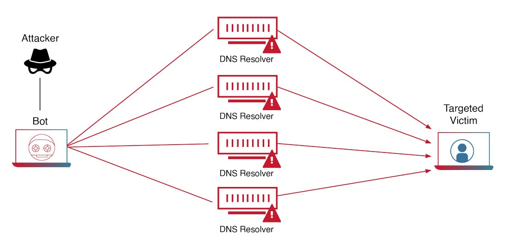

Vertrouwelijkheid
Vertrouwelijkheid is cruciaal bij het verkrijgen van toegang tot persoonlijke gegevens, en dit begint met een controle om te verifiëren of de gebruiker daadwerkelijk bevoegd is (authenticatie). Dit kan op verschillende manieren gebeuren, waaronder iets wat je weet (zoals een wachtwoord, wachtzin of pincode), iets wat je hebt (bijvoorbeeld een pasje, token of los apparaat), of iets wat je bent (biometrische kenmerken zoals een vingerafdruk, irisscan of aderpatroon). Het verhogen van de veiligheid van persoonlijke gegevens kan worden bereikt door middel van twee-factor-authenticatie (2FA), waarbij twee verschillende authenticatiemiddelen worden gebruikt, zoals een wachtwoord en een vingerafdruk. Naast authenticatie is er ook het aspect van identificatie, waarbij de service wil weten wie de gebruiker is. Dit kan plaatsvinden door het invoeren van een gebruikersnaam en wachtwoord of door het gebruik van biometrische kenmerken. Vervolgens wordt er geverifieerd om te bevestigen of de gebruiker daadwerkelijk is wie hij beweert te zijn, wat alleen mogelijk is als er al bekende gegevens van de gebruiker zijn. Een gerelateerde techniek aan authenticatie, identificatie en verificatie is screening. Hierbij worden personen of objecten geïdentificeerd met als doel informatie te verkrijgen over de betreffende persoon.Intregiteit
speelt een essentiële rol in het beheer van toegang en rechten voor gebruikers in informatiesystemen. Gebruikers hebben specifieke toegangsrechten die zijn gekoppeld aan hun rol, zoals bijvoorbeeld in Magister, waar de rol 'docent' meer privileges heeft dan de rol 'leerling', waaronder het kunnen invoeren van cijfers. De controle van deze rechten wordt autorisatie genoemd, wat tevens een vorm van integriteitscontrole is, aangezien het zorgt voor de correctheid van de gegevens. In Magister wordt de toegang tot functies beperkt op basis van de gebruikersrol; docenten hebben uitgebreidere rechten dan leerlingen, en beheerders hebben over het algemeen de meeste rechten. Het handhaven van deze rechten draagt bij aan de integriteit van de gegevens, omdat alleen geautoriseerde gebruikers bepaalde handelingen kunnen uitvoeren. Integriteit in de context van informatiesystemen omvat ook het waarborgen van de kwaliteit van informatie, met criteria zoals volledigheid, relevantie, betrouwbaarheid, overzichtelijkheid, beschikbaarheid, en doelgerichtheid. In Magister wordt dit gewaarborgd door het afdwingen van gebruikersrechten, wat resulteert in correcte gegevens en dus integriteit. Daarnaast heeft integriteit in computernetwerken betrekking op het beperken van toegang tot specifieke schijven of mappen op basis van de gebruikersrol. Bijvoorbeeld, schoolleiding kan toegang hebben tot een aparte netwerkschijf voor het delen van bestanden, terwijl informatica-leerlingen toegang hebben tot bestanden die niet toegankelijk zijn voor andere leerlingen. Dit wordt geregeld via autorisatie en bestandsrechten, ingesteld door de systeembeheerder. Het handhaven van integriteit kan ook worden bevorderd door het maken van regelmatige back-ups. In geval van onvoorziene problemen kan teruggekeerd worden naar een eerdere staat waarin de data nog integer was. Tot slot, in andere contexten, zoals bij geldoverdrachten met IBAN, wordt integriteit gewaarborgd door checksums en controlegetallen om fouten bij het invoeren van rekeningnummers te voorkomen, hoewel dit niets zegt over de 'eigenaar' van het IBAN.Beschikbaarheid
Beschikbaarheid vormt, naast vertrouwelijkheid en integriteit, een essentieel aspect van dataveiligheid. Dit houdt in dat gegevens altijd toegankelijk moeten zijn, wat regelmatig onderhoud vereist, zoals het installeren van beveiligingsupdates of het vervangen van defecte hardware. Wanneer gegevens onverwacht niet beschikbaar zijn, is het cruciaal om back-ups te maken. Dit kan worden gedaan via clouddiensten zoals OneDrive, Google Drive of iCloud Drive, of fysiek met behulp van een USB-stick of externe harde schijf. Het is belangrijk om fysieke back-ups op een andere locatie te bewaren dan de originele data, om verlies door calamiteiten zoals brand te voorkomen. Het ideale scenario is het toepassen van het 3-2-1-systeem voor back-ups: drie kopieën van de data, opgeslagen op twee verschillende manieren, met één kopie op een andere locatie. Bijvoorbeeld, foto's kunnen op een computer worden opgeslagen, uitgeprint thuis, en op een externe harde schijf bij een vriend. Toegangscontrole vereist veilige opslag en verzending van gegevens, zoals wachtwoorden en vingerafdrukken. Een inbreuk op een wachtwoorddatabase kan leiden tot ongeautoriseerde toegang tot persoonlijke gegevens. Hoewel wachtwoorden kunnen worden gewijzigd, geldt dit niet voor vingerafdrukken. Niet alleen inloggegevens, maar ook gevoelige bestanden moeten veilig worden opgeslagen. Encryptie kan hierbij helpen, waarbij de inhoud van een bestand wordt 'gehusseld' met een sleutel (zoals een wachtwoord). Alleen met de juiste sleutel kan de originele inhoud worden hersteld. Encryptie wordt ook toegepast voor het beveiligen van communicatie, zoals bij WhatsApp's end-to-end versleuteling, waardoor alleen de gesprekspartners de berichten kunnen lezen. Hashing wordt gebruikt voor het veilig opslaan van wachtwoorden en vingerafdrukken. Hierbij wordt de originele data omgezet in een hash, die niet kan worden teruggerekend naar de originele data. Bij een inlogpoging wordt het ingevoerde wachtwoord gehasht en vergeleken met de opgeslagen hash. Als deze overeenkomen, wordt het wachtwoord als correct beschouwd. Om de beschikbaarheid van websites te waarborgen, moeten ze weerstand bieden tegen DDoS-aanvallen (Distributed Denial of Service). Dergelijke aanvallen, waarbij duizenden aanvragen per seconde worden gedaan om de dienst te overbelasten, kunnen tijdelijke onbeschikbaarheid veroorzaken. Om dit te bestrijden, wordt het verkeer vaak gefilterd, waarbij alleen goedgekeurd verkeer wordt doorgelaten. Bij grote hoeveelheden ongewenst verkeer kan het internetverkeer worden omgeleid naar een gespecialiseerde anti-DDoS-dienst, bekend als een 'Anti-DDoS wasstraat', die geavanceerde methoden gebruikt om ongewenst verkeer te identificeren en alleen legitiem verkeer toe te staan.